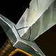

起手組件

長劍剎雅以長劍開始組雲陶狂箭；有餘額可補合成組件或鞋子，不把起手列為第六件成裝。
校正至 7.3f · 2026-11-13。Tier與配置是本站的模式策略判斷，不是官方勝率排名。
本站獨立邏輯複核：以既有手機版技能／裝備／符文資料與已整理的7.3f官方差異推演；本輪不採用外站評級、勝率或推薦配置。
單線五人戰重視消耗、清兵、開戰或保排；側線壓力與野區入侵優勢不直接計分，回血也不能假設抵銷全部消耗。
雲陶狂箭 → 那歐疾刃：前者提供普攻與暴擊路線，後者補接續主要作戰需求。以這條路線的輸出距離打團，死亡回補時再決定後續防護；沒有回城購物可補救每次換血。
征服者：以獨立技能與普攻累積長戰收益；短打一輪就撤退時通常無法吃滿。其餘選用兇蠻、斷切、傳奇：敏捷、骨甲，依本頁輸出方式與生存需求配套。
閃現＋光盾。保留位移／保命用途，避免為一輪消耗同時用掉全部防護。標準ARAM不套用打野重擊收益。
3 技 > 2 技 > 1 技。ARAM 開局三個基礎技能各點 1 級，之後主升 3 技、次升 2 技；大絕能點就點。
本站獨立邏輯複核：以既有手機版技能／裝備／符文資料與已整理的7.3f官方差異推演；本輪不採用外站評級、勝率或推薦配置。 完成策略與配置一致性複核，不等於全部技能逐級數值、傷害計算及所有特殊互動已實測；既有缺證項目仍保留。 標準ARAM倍率沿用既有記錄；賽勒斯倍率仍未確認。
起手組件 → 一階鞋或首件核心（依壓力調整）→ 核心成裝 → 鞋子升級 → 情境後續裝。五件成裝加一雙鞋；鞋子兩張圖表示升級前後，不是同時購買兩雙。

剎雅以長劍開始組雲陶狂箭；有餘額可補合成組件或鞋子，不把起手列為第六件成裝。
剎雅：以普攻累積暴擊率並在接戰時取得攻速；適合能安全持續普攻的路線，不把尚未疊滿視為滿暴擊。
剎雅的羽刃佈局／反開自保型射手配置，以這格維持原本的功能分工。
剎雅：強化已成形暴擊路線；需要與暴擊來源配合，不將本裝當成攻速或續航裝。

剎雅：同時提供物理穿透與重創；和多明尼克的問候、席利妲咒怨擇一，不把多件穿透裝當作預設。
剎雅：以物攻與普攻吸血改善持續對拼；不是暴擊裝，也不把普攻吸血描述為所有技能都能同額吸血。
攻速提高鋪羽速度與團戰輸出。
剎雅：升級普攻鞋線，補攻速、普攻吸血與接戰移速；依輸出窗口安排，不和第二雙鞋同時裝備。

調整羽刃拉回角度、躲控制或重新站到安全輸出位。

大絕交掉後仍提供一次自保容錯。

征服者：以獨立技能與普攻累積長戰收益；短打一輪就撤退時通常無法吃滿。
普攻對敵方英雄造成額外適性傷害。
普攻對生命高於 60% 的敵方英雄造成 6.5% 額外傷害。
增加 3% 攻速。

受到敵方英雄傷害時，在接下來 1.5 秒內，使該英雄接下來 3 次技能或普攻傷害減少 30–60（隨等級）。
3 技 > 2 技 > 1 技
ARAM 開局三個基礎技能各點 1 級，之後主升 3 技、次升 2 技；大絕能點就點。
用 1 技與技能後普攻把羽刃鋪在兵線後方，敵人走進三根以上羽刃路徑就找 3 技禁錮。
衝擊火炮與那歐疾刃讓清線、鋪羽與技能循環更快。敵方突進交位移後再拉羽，命中率會高很多。
大絕優先用來躲最致命的技能，而不是補傷害。不可指定結束後立刻看羽刃位置，常能用 3 技反控追你的敵人。
雲陶提供持續普攻基底，那歐支援羽毛技能循環；大絕自保後再安排倒鉤，不為了增幅主動交掉保命。
敵方護甲高但治療不多
剎雅：處理物防前排的暴擊穿透格；需要重創時以致死宣告取代，而不是兩件一起購買。

敵方刺客很多
可替換無盡或磁性雷射槍，提高最後一波容錯。
敵方護盾非常多
可犧牲一件暴擊裝換取破盾功能。
標準 ARAM 最後可追溯倍率：Riot 7.1d：標準 ARAM 剎雅傷害輸出 95%→100%。7.2b：磁性雷射槍物攻 25→30；那歐疾刃價格 2800→2700。 本輪核對至7.3e，未以符文大亂鬥倍率覆蓋；官方未提供本英雄完整新版倍率總表，若遊戲內不同以當局模式增益為準。
143位英雄的打法與路線條件複核；既有單卡分級與相容表保留其原有版本，不宣稱全部英雄×全部卡片重新實測或重評。
剎雅以高頻普攻鋪羽，再用三技能回收羽刃禁錮敵人；暴擊與普攻是核心，技能與疾風回音能提高鋪羽、拉羽與大絕保命後的反打效率。
羽毛回收與不可選取大絕適合反打突進；輸出需要羽毛布置，對手不追進羽毛區時應重新選位。 增幅先補本套缺少的進場、生存或輸出條件，再看上限；未取得卡面要求的觸發方式就不為它換掉核心。
7.3f：祕術拳擊每次普攻減冷卻提高到0.8秒；連鎖反應冷卻延長到25秒。隱霧反擊、流轉碎礫、移山者削弱；選擇時先看自身能否觸發，不把增幅改動套到標準ARAM。
核心
標準出裝高度依賴暴擊，暴擊增幅能直接放大普攻、羽刃與拉羽傷害。
核心
每次普攻都在鋪設羽刃，高頻命中特效與攻速能直接提高三技能威脅。
高適配
三技能禁錮與大絕保命都是團戰關鍵，技能循環能提高反打頻率。
高適配
攻速、射程與多次普攻效果能讓羽刃更快鋪滿戰場。
適配
三技能禁錮可以穩定觸發控制增幅，但需要先鋪好羽刃。
適配
大絕雙放、施放大絕無敵與普攻縮技能等單卡能提高反打上限。
暴擊／普攻／疾風增幅多
嗜血者與磁性雷射槍維持安全普攻，再用那歐疾刃與無盡提高鋪羽和拉羽頻率。 本路線已同步7.3c的一般裝備；增幅專屬替換另依抽卡決定。
剎雅：以普攻累積暴擊率並在接戰時取得攻速；適合能安全持續普攻的路線，不把尚未疊滿視為滿暴擊。
剎雅的羽刃佈局／反開自保型射手配置，以這格維持原本的功能分工。
剎雅：強化已成形暴擊路線；需要與暴擊來源配合，不將本裝當成攻速或續航裝。
剎雅：同時提供物理穿透與重創；和多明尼克的問候、席利妲咒怨擇一，不把多件穿透裝當作預設。
剎雅：以物攻與普攻吸血改善持續對拼；不是暴擊裝，也不把普攻吸血描述為所有技能都能同額吸血。
攻速提高鋪羽速度與團戰輸出。
剎雅：升級普攻鞋線，補攻速、普攻吸血與接戰移速；依輸出窗口安排，不和第二雙鞋同時裝備。
敵方切入能力強
加入守護天使，提高大絕與三技能反控後的生存容錯。
剎雅：以物攻與普攻吸血改善持續對拼；不是暴擊裝，也不把普攻吸血描述為所有技能都能同額吸血。
剎雅：充能攻擊提供一次延伸射程的接觸機會；不提供舊磁性雷射槍的連鎖清線，也不是永久增程。
7.2b 降價後更早成形，普攻縮短非大絕技能冷卻，能更頻繁鋪羽與拉羽。
剎雅：強化已成形暴擊路線；需要與暴擊來源配合，不將本裝當成攻速或續航裝。
敵方刺客很多
可替換無盡或磁性雷射槍，提高最後一波容錯。
攻速提高鋪羽速度與團戰輸出。
剎雅：升級普攻鞋線，補攻速、普攻吸血與接戰移速；依輸出窗口安排，不和第二雙鞋同時裝備。
分類與單卡評級是本站條件式建議。新卡完整效果未核實時不補造數值；當局抽到的卡片會改變優先順序。
本站獨立邏輯複核：以既有手機版技能／裝備／符文資料與已整理的7.3f官方差異推演；本輪不採用外站評級、勝率或推薦配置。 完成策略與配置一致性複核，不等於全部技能逐級數值、傷害計算及所有特殊互動已實測；既有缺證項目仍保留。